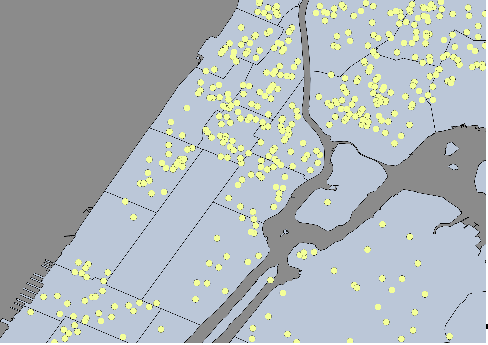

Mètodes d'Investigació Criminològica Avançada
Sessió 11: Buffers, distàncies, agregació, patrons, i agrupament
agrupament

agrupament
Com assignar punts als grups?
"K-means" agrupament
$$\textrm{arg min}\sum_{i=1}^k\sum_{x_j \in s_i}\left(x_j - \mu_i \right)^2$$"K-means" agrupament
agrupament
agrupament

Distàncies i Buffers
Assalts, 11/01/2016-12/31/2016
Precinct Shapefiles
Distàncies
Matriu de distàncies
Matriu de distàncies
Buffers
Buffers

noves fonts de dades

- Llegir: Oyala (2014) cap. 12
- Projecte: 7 de març: Segon Mapa
- Projecte: 13 de març: Presentar mapes finals